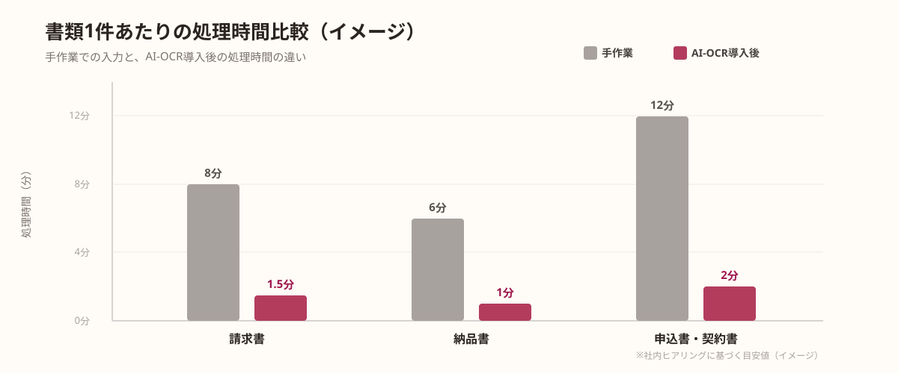
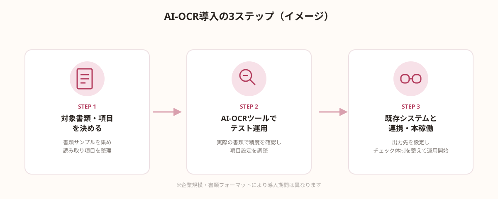

請求書、納品書、申込書——多くの企業では、こうした紙やPDFの書類から必要な情報を読み取り、Excelや基幹システムに手で入力し直す作業が、今も日常的に発生しています。件数が少ないうちは問題になりませんが、月に数百件を超えてくると、入力作業だけで担当者の業務時間の大半が埋まってしまうケースも珍しくありません。
この記事では、こうした書類処理をAI-OCRで自動化する仕組みと、導入前に整理すべきポイント、実際にスポット発注で進める際の3ステップを解説します。
請求書・書類処理が「いつまでも手作業」から抜けられない理由
「OCRソフトを導入すればいいのでは」と思われる方も多いはずですが、実際には従来型のOCRを試して挫折したという企業が少なくありません。フォーマットが取引先ごとに異なる請求書では、項目の位置がバラバラなため、定型レイアウトを前提とした従来のOCRでは読み取り精度が安定せず、結局「目視確認の方が早い」という結論に戻ってしまうのです。
また、情報システム部門が専任でいない中小企業では、OCRツールの選定・設定・既存システムとの連携までを自社だけで進めるのが難しく、検討が後回しになりがちです。「ツールを入れれば終わり」ではなく、運用に乗せるまでの設計が必要という点が、書類処理のAI化が進みにくい大きな要因になっています。
AI-OCRとは何か｜従来のOCRと何が違うのか
AI-OCRは、文字を画像から読み取るだけの従来型OCRに対して、機械学習によって書類のレイアウトや項目の意味を推定しながら読み取る点が大きく異なります。請求書なら「これは取引先名」「これは金額」「これは支払期日」といった項目を、フォーマットが多少異なっていても自動で判別できるため、取引先ごとに書式が違う書類でも比較的高い精度でデータ化が可能です。

もちろん精度は100%ではなく、手書き文字や劣化したスキャン画像では読み取りミスも発生します。ただし「ゼロから手入力する」のではなく「AIが読み取った内容を確認・修正する」作業に変わるため、1件あたりの処理時間を大幅に短縮できる点が最大のメリットです。
導入前に整理すべき3つのポイント
AI-OCRの導入効果を最大化するには、ツールを選ぶ前に次の3点を整理しておくことが重要です。
①対象とする書類の種類を絞る
請求書・納品書・申込書など、すべての書類を一度に対象にしようとすると要件が複雑になります。まずは件数が多く、フォーマットがある程度パターン化されている書類から始めるのが現実的です。
②既存システムとの連携方法を確認する
読み取ったデータをどこに反映するか（会計システム、基幹システム、Excel台帳など）によって、必要な連携方法が変わります。「データ化した後、どこに流し込むか」を先に決めておくことで、手戻りを防げます。
③精度の許容範囲とチェック体制を決める
AI-OCRの読み取り結果をどこまで人が確認するかを、あらかじめ決めておく必要があります。金額など重要項目は必ず目視確認するなど、項目ごとにチェックの濃淡をつけることで、確認作業自体が負担にならない運用にできます。
この3点が固まっていれば、ツール選定や開発範囲の見積もりがしやすくなり、導入後の「思っていた使い方と違う」というギャップも防げます。
AI-OCR導入の3ステップ
実際にAI-OCRを導入する際は、次の3ステップで進めるのが基本的な流れです。

- ステップ1｜対象書類・読み取り項目を決める（書類サンプルを集め、読み取りたい項目を整理する）
- ステップ2｜AI-OCRツールでテスト運用（実際の書類で読み取り精度を確認し、項目設定を調整する）
- ステップ3｜既存システムと連携・本稼働（読み取り結果の出力先を設定し、チェック体制を整えて運用開始）
特に重要なのはステップ2のテスト運用です。本番データを使わずにいきなり全社展開すると、想定外のフォーマットで精度が落ちて現場の信頼を失いやすくなります。一部の部署・一部の取引先に限定してテストし、精度と運用の手間を確認してから範囲を広げるのが安全な進め方です。
導入後によくある失敗と注意点
AI-OCRの導入自体は難しくありませんが、運用が定着しない企業にはいくつか共通点があります。
- 読み取り精度への期待が高すぎる：「導入すれば確認作業がゼロになる」と期待してしまい、実際の修正作業量にギャップを感じて運用が止まってしまう
- 例外パターンへの対応を決めていない：手書き・複数ページ・特殊フォーマットの書類が来た際の処理ルールを決めておらず、現場が個別対応に追われる
- 連携先システムの仕様変更に追従できない：会計システムの更新などでデータ連携が崩れた際、修正できる担当者が社内にいない
💡 運用を止めないコツ
「精度100%」を目指すのではなく、「どこまでAIに任せ、どこを人が確認するか」の線引きを最初に決めておくことが、AI-OCR運用を定着させる最大のポイントです。
自社開発・SaaS導入・スポット外注、どちらが向いているか
AI-OCRを取り入れる方法は、大きく3つに分かれます。既製のSaaS型AI-OCRサービスをそのまま契約する方法、自社でAPIを組み合わせて開発する方法、そして既存システムとの連携部分や項目設定だけをスポットで外部に依頼する方法です。
SaaS型は導入の早さが魅力ですが、自社の書類フォーマットや既存システムとの連携に細かい調整が必要な場合、標準機能だけでは対応しきれないことがあります。一方、すべてを自社開発しようとすると、AI-OCR APIの選定から連携実装まで専門知識が必要になり、社内に担当者がいない企業ではハードルが高くなります。
そのため、「SaaSの標準機能と自社の運用の間を埋める部分」だけをスポットで依頼するという選択肢が現実的です。たとえば読み取り項目のカスタマイズ、会計システムへの自動連携、例外パターンの処理ルール設計などを切り出して依頼することで、固定費をかけずに自社の運用に合った形でAI-OCRを導入できます。
🔧 「連携部分だけ作ってほしい」企業様へ
ANKENでは、AI-OCRと既存システムの連携実装や、読み取り項目のカスタマイズなど、書類データ化の一部だけを切り出してスポットで依頼することも可能です。固定費ゼロ・週末対応のエンジニアとマッチングできます。
よくある質問
- Q. AI-OCRは従来のOCRと何が違いますか？
- A. 従来のOCRは定型フォーマット中心ですが、AI-OCRは非定型の書類でも文脈を理解し情報を抽出できます。
- Q. 導入前に何を整理すべきですか？
- A. 対象書類の種類・量、必要な抽出項目、既存システムとの連携要否の3点を整理しておく必要があります。
- Q. 導入までどのくらいの期間がかかりますか？
- A. 書類の整理・ツール選定・試験運用の3ステップで進めれば、数週間程度での導入が可能です。
まとめ・ANKENへのご相談
請求書・納品書などの書類処理をAI-OCRで自動化するには、対象書類の絞り込み、既存システムとの連携方法、精度の許容範囲という3つのポイントを先に整理した上で、テスト運用から段階的に範囲を広げることが欠かせません。SaaS導入・自社開発・スポット外注のどれが向いているかは、自社の運用に合わせた連携や調整がどこまで必要かによって変わります。
ANKENでは、AI-OCR導入の連携部分の実装支援から、バックオフィス全体のAI活用まで、固定費ゼロ・週末スポットからのご相談に対応しています。
AI-OCRと既存システムの連携実装から、バックオフィス全体のAI活用まで、固定費ゼロ・週末スポットから依頼可能です。
👉 無料でスポット依頼を相談する初回相談は無料です。要件が固まっていなくてもOKです。